Code
library(forecast)
library(tseries)
y <- AirPassengers # monthly airline passengers 1949-1960
plot(y, main = "Air passengers")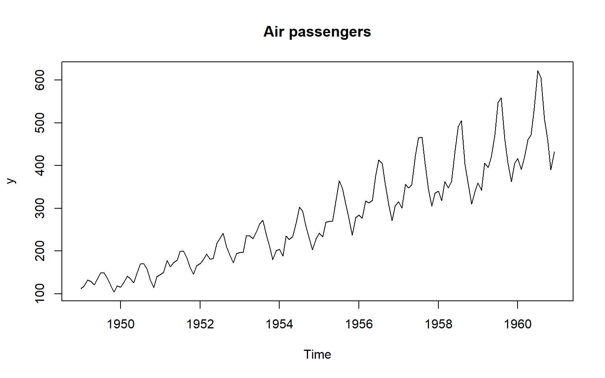
This section covers Part 1 - Introduction: what a time series is, components, stationarity, white noise, benchmark forecasts and forecast accuracy. The main ideas here are,
library(forecast)
library(tseries)
y <- AirPassengers # monthly airline passengers 1949-1960
plot(y, main = "Air passengers")
The trend goes up, there is a yearly pattern, and the seasonal swings get bigger as the level goes up. So take logs first.
plot(log(y), main = "log(Air passengers)")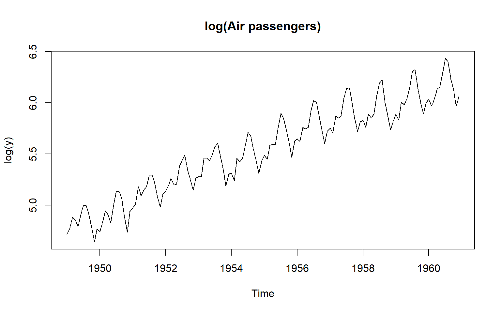
# STL decomposition into trend, season and remainder
plot(stl(log(y), s.window = "periodic"))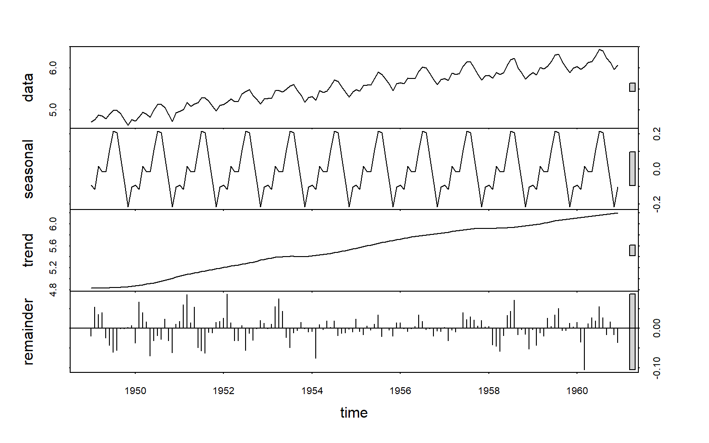
par(mfrow = c(1, 3))
acf(log(y), lag.max = 48, main = "log(y)")
acf(diff(log(y)), lag.max = 48, main = "first difference")
acf(diff(diff(log(y)), lag = 12), lag.max = 48, main = "first + seasonal diff")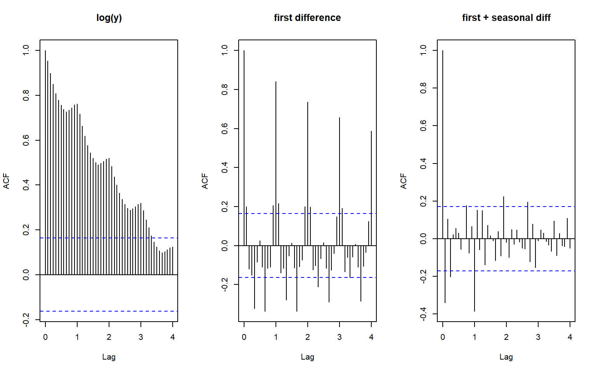
par(mfrow = c(1, 1))The ACF of log(y) decays very slowly, which is the sign of a trend (non-stationary). After the first difference, there are still big spikes at lags 12, 24, 36 (seasonality). After both differences, it looks close to stationary.
Two tests that work in opposite directions:
adf.test(log(y))
Augmented Dickey-Fuller Test
data: log(y)
Dickey-Fuller = -6.4215, Lag order = 5, p-value = 0.01
alternative hypothesis: stationarykpss.test(log(y))
KPSS Test for Level Stationarity
data: log(y)
KPSS Level = 2.8287, Truncation lag parameter = 4, p-value = 0.01z <- diff(diff(log(y)), lag = 12)
adf.test(z)
Augmented Dickey-Fuller Test
data: z
Dickey-Fuller = -5.1993, Lag order = 5, p-value = 0.01
alternative hypothesis: stationarykpss.test(z)
KPSS Test for Level Stationarity
data: z
KPSS Level = 0.084365, Truncation lag parameter = 4, p-value = 0.1On log(y) the two tests disagree. adf.test() includes a linear trend term, so it only says “no unit root once you allow for a trend”. KPSS rejects a constant mean. After differencing, both agree the series is stationary. When tests conflict, trust the plots and the ACF as well, and say why in the write-up.
set.seed(1)
wn <- rnorm(200)
plot.ts(wn, main = "White noise")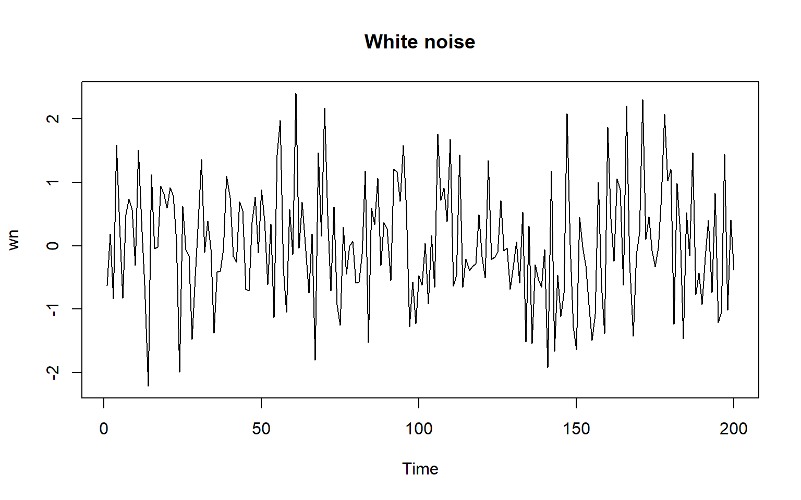
acf(wn)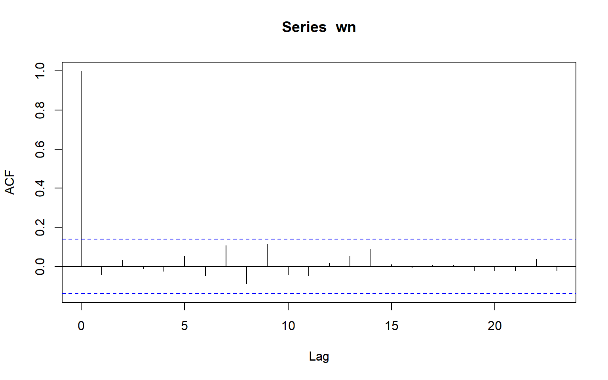
Box.test(wn, lag = 10, type = "Ljung-Box")
Box-Ljung test
data: wn
X-squared = 8.9624, df = 10, p-value = 0.5357About 1 in 20 spikes will cross the blue lines just by chance. The Ljung-Box p-value is large, so we can’t reject white noise.
Keep the last 2 years as a test set.
train <- window(y, end = c(1958, 12))
test <- window(y, start = c(1959, 1))
h <- length(test)
f_mean <- meanf(train, h = h)
f_naive <- naive(train, h = h)
f_snaive <- snaive(train, h = h)
f_drift <- rwf(train, h = h, drift = TRUE)
plot(y, main = "Benchmark forecasts", xlim = c(1955, 1961))
lines(f_mean$mean, col = "blue")
lines(f_naive$mean, col = "red")
lines(f_snaive$mean, col = "darkgreen")
lines(f_drift$mean, col = "orange")
legend("topleft", c("mean", "naive", "seasonal naive", "drift"),
col = c("blue", "red", "darkgreen", "orange"), lty = 1)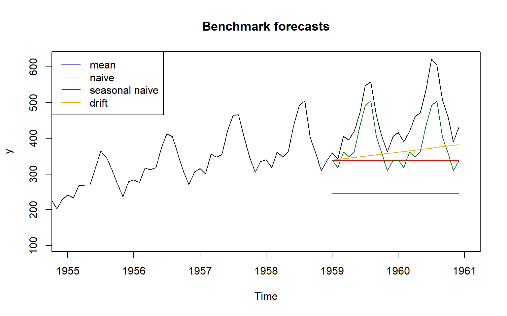
acc <- rbind(
mean = accuracy(f_mean, test)[2, ],
naive = accuracy(f_naive, test)[2, ],
snaive = accuracy(f_snaive, test)[2, ],
drift = accuracy(f_drift, test)[2, ]
)
round(acc[, c("RMSE", "MAE", "MAPE", "MASE")], 2) RMSE MAE MAPE MASE
mean 219.44 206.34 44.23 7.22
naive 137.33 115.25 23.58 4.03
snaive 76.99 71.25 15.52 2.49
drift 115.70 91.62 18.41 3.21Row 2 of accuracy() is the test set. Seasonal naive wins, because the series is so seasonal.
Seasonal naive and RMSE by hand, to check that it matches snaive() and accuracy().
my_snaive <- rep(tail(train, 12), length.out = h)
my_rmse <- sqrt(mean((test - my_snaive)^2))
my_rmse[1] 76.99459accuracy(f_snaive, test)[2, "RMSE"][1] 76.99459Rolling origin: forecast one step ahead from every point in the series, then average the errors. This gives a much better idea of accuracy than a single test set.
e <- tsCV(y, snaive, h = 1)
sqrt(mean(e^2, na.rm = TRUE))[1] 36.45315e2 <- tsCV(y, naive, h = 1)
sqrt(mean(e2^2, na.rm = TRUE))[1] 33.82515Why a random train/test split is wrong for time series. Time series observations depend on the ones before them, so a random split puts future values in the training set and past values in the test set. The model then gets to see information it would never have in practice, and its accuracy looks better than it really is. A test set should be the most recent part of the series, so the model is judged on data it could not have seen.
Why the ACF of a trending series decays slowly. If a series trends upward, each value is close to the values just before it, so it stays correlated with them across many lags. The autocorrelation at lag k stays high for a long stretch before it falls, which gives the slow decay. That slow decay is a sign the series is non-stationary, and differencing is usually needed before modelling.
The difference between a forecast, a goal and a plan. A forecast is a prediction of what will happen, based on the data and the model, whatever anyone wants to happen. A goal is what you would like to happen. A plan is what you will do to try to reach the goal. Keeping them separate matters because a forecast can show a goal is out of reach, and a plan should be built on the forecast, not on the goal.
Why a forecast is a distribution, and how the horizon should match the decision. A forecast is a random variable, so the honest answer is a range of likely values with probabilities attached, not one number. The uncertainty grows the further ahead you go, so the horizon should match the decision: a staff roster for next week needs a short-horizon forecast, while a five-year capacity plan needs a long one, and each comes with a wider interval.
In this section I worked through the practical with the sales_data.csv.
# Run once — install anything missing
pkgs <- c("tidyverse", "tsibble", "feasts", "fable", "timetk",
"modeltime", "kableExtra", "here")
install.packages(pkgs[!pkgs %in% installed.packages()[, "Package"]])# Monthly data starting Jan 2023 (frequency = 12)
my_ts <- ts(c(10, 20, 15, 25, 30, 40, 35, 45, 50, 55, 60, 65),
start = c(2023, 1),
frequency = 12)
print(my_ts) Jan Feb Mar Apr May Jun Jul Aug Sep Oct Nov Dec
2023 10 20 15 25 30 40 35 45 50 55 60 65# Sum by year
annual_sum <- aggregate(my_ts, FUN = sum)
# Mean by year
annual_mean <- aggregate(my_ts, FUN = mean)
print(annual_sum)Time Series:
Start = 2023
End = 2023
Frequency = 1
[1] 450# Create daily sample data
df <- data.frame(
date = seq(as.Date("2023-01-01"), by = "day", length.out = 100),
value = rnorm(100, mean = 50)
)
# Aggregate by Month using format()
agg_month <- aggregate(value ~ format(date, "%Y-%m"), data = df, FUN = sum)
# Aggregate by Week (%U for week of the year)
agg_week <- aggregate(value ~ format(date, "%Y-%U"), data = df, FUN = mean)
head(agg_month)| format(date, “%Y-%m”) | value |
|---|---|
| 2023-01 | 1550.7825 |
| 2023-02 | 1398.2641 |
| 2023-03 | 1551.8393 |
| 2023-04 | 502.0814 |
head(agg_week)| format(date, “%Y-%U”) | value |
|---|---|
| 2023-01 | 50.60478 |
| 2023-02 | 49.93199 |
| 2023-03 | 49.97284 |
| 2023-04 | 49.67726 |
| 2023-05 | 49.49370 |
| 2023-06 | 50.30129 |
t <- time(my_ts)
# Extract Year and Month
years <- floor(t)
months <- round(12 * (t - years)) + 1
data.frame(Decimal = as.numeric(t), Year = years, Month = months)| Decimal | Year | Month |
|---|---|---|
| 2023.000 | 2023 | 1 |
| 2023.083 | 2023 | 2 |
| 2023.167 | 2023 | 3 |
| 2023.250 | 2023 | 4 |
| 2023.333 | 2023 | 5 |
| 2023.417 | 2023 | 6 |
| 2023.500 | 2023 | 7 |
| 2023.583 | 2023 | 8 |
| 2023.667 | 2023 | 9 |
| 2023.750 | 2023 | 10 |
| 2023.833 | 2023 | 11 |
| 2023.917 | 2023 | 12 |
# Extract only the second half of 2023
sub_ts <- window(my_ts, start = c(2023, 7), end = c(2023, 12))
print(sub_ts) Jul Aug Sep Oct Nov Dec
2023 35 45 50 55 60 65# Shift the time index forward by 1 period (does not move the values)
lagged_ts <- stats::lag(my_ts, k = -1)
# First-order differencing (removes linear trend)
diff_ts <- diff(my_ts, differences = 1)
# Seasonal differencing (removes a 12-month seasonal pattern)
seasonal_diff_ts <- diff(my_ts, lag = 12)
diff_ts Feb Mar Apr May Jun Jul Aug Sep Oct Nov Dec
2023 10 -5 10 5 10 -5 10 5 5 5 5ts_a <- ts(1:10, start = c(2023, 1), frequency = 12)
ts_b <- ts(11:18, start = c(2023, 4), frequency = 12)
# Union: keeps full range, fills gaps with NA
combined_union <- ts.union(ts_a, ts_b)
# Intersect: keeps only the overlapping months
combined_intersect <- ts.intersect(ts_a, ts_b)
combined_intersect ts_a ts_b
Apr 2023 4 11
May 2023 5 12
Jun 2023 6 13
Jul 2023 7 14
Aug 2023 8 15
Sep 2023 9 16
Oct 2023 10 17has_na <- anyNA(my_ts)
cat("Contains missing values:", has_na, "\n")Contains missing values: FALSE # Simple linear interpolation for isolated gaps (base R, no extra packages)
ts_with_gap <- my_ts
ts_with_gap[5] <- NA
ts_filled <- ts(approx(time(ts_with_gap), ts_with_gap, xout = time(ts_with_gap))$y,
start = start(ts_with_gap), frequency = frequency(ts_with_gap))
ts_filled Jan Feb Mar Apr May Jun Jul Aug Sep Oct Nov Dec
2023 10.0 20.0 15.0 25.0 32.5 40.0 35.0 45.0 50.0 55.0 60.0 65.0sample_ts <- my_ts # didn't have same object but its just for demonstration so its fine
plot.ts(sample_ts,
main = "Monthly Observations (2023)",
xlab = "Year/Month",
ylab = "Measurement Units",
col = "darkred",
lwd = 2,
lty = 1,
type = "o",
pch = 16)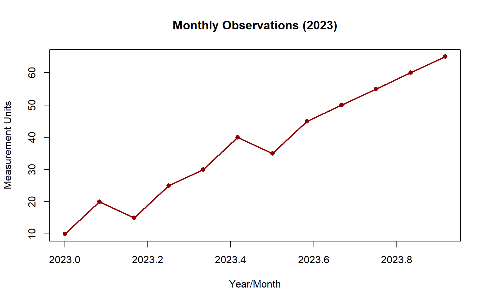
plot(sample_ts,
main = "Simplified Time Plot",
col = "blue",
lty = 2)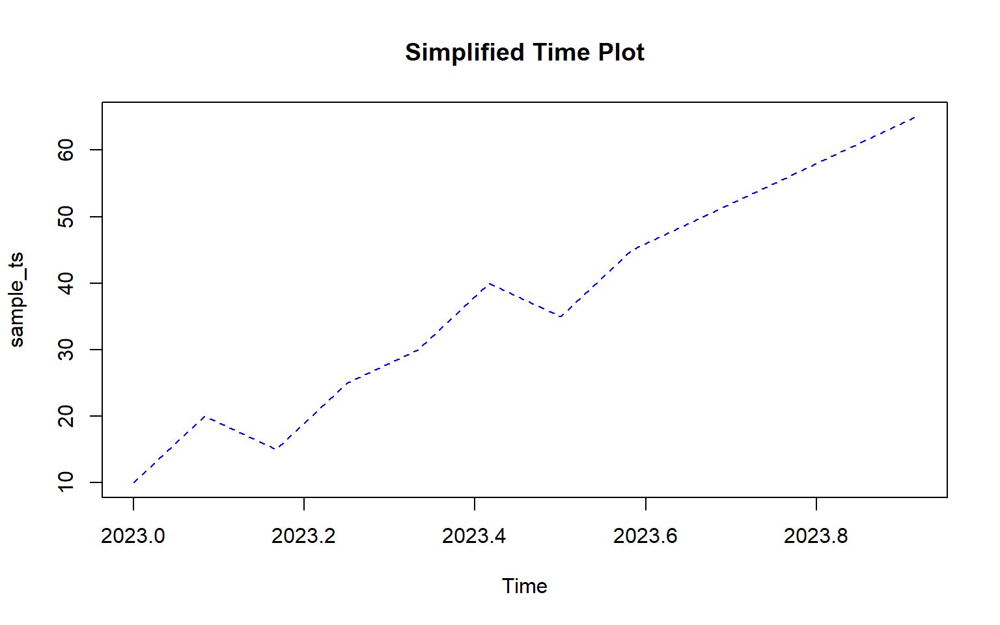
# 1. Create a dummy data frame (Simulating raw data import)
raw_data <- data.frame(
Month = 1:24,
Value = c(10, 12, 15, 14, 18, 22, 25, 24, 20, 15, 12, 11,
12, 14, 17, 16, 20, 24, 28, 27, 22, 17, 14, 13)
)
# 2. Convert to a Time Series object (Monthly data starting Jan 2024)
my_ts_object <- ts(raw_data$Value, start = c(2024, 1), frequency = 12)
# 3. Inspect the structure
print(my_ts_object) Jan Feb Mar Apr May Jun Jul Aug Sep Oct Nov Dec
2024 10 12 15 14 18 22 25 24 20 15 12 11
2025 12 14 17 16 20 24 28 27 22 17 14 13# 4. Check the attributes
cat("Start:", start(my_ts_object), "\n")Start: 2024 1 cat("Frequency:", frequency(my_ts_object), "\n")Frequency: 12 # 5. Simple Base R Visualisation
plot(my_ts_object, type = "o", pch = 20, main = "Demonstration of ts Object",
ylab = "Values", xlab = "Time")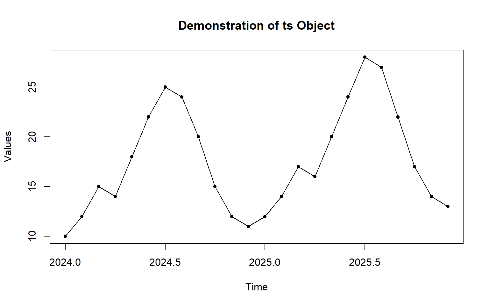
# 6. A first look at structure: naive decomposition (covered in depth in Part B)
decomp <- decompose(my_ts_object)
plot(decomp)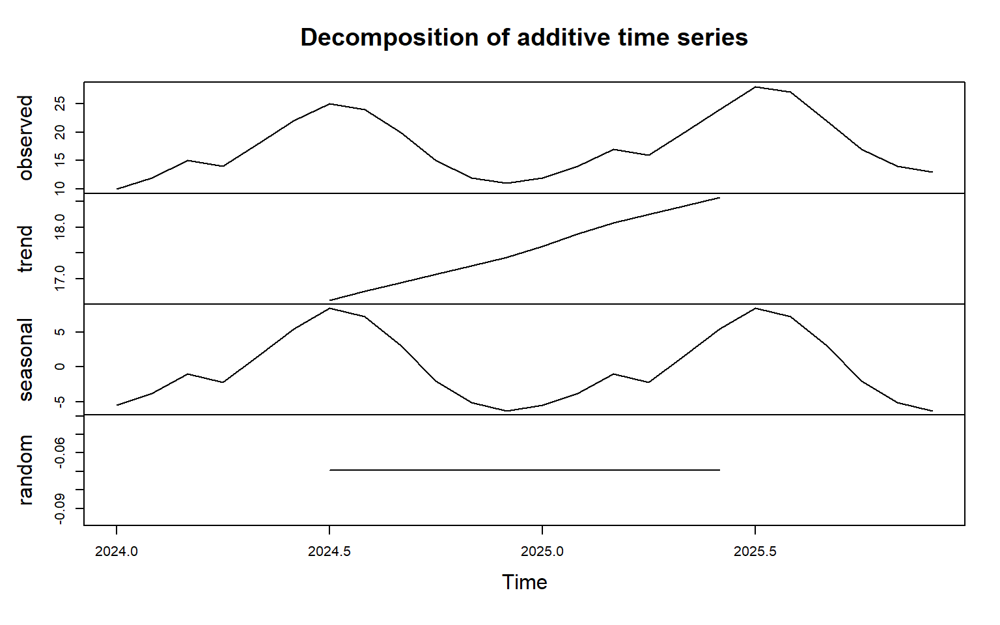
# Core packages used in this section
library(tidyverse) # dplyr, ggplot2, readr, lubridate
library(tsibble) # tidy time series class: index + key
library(feasts) # Feature extraction And Statistics for Time Series
library(timetk) # tidy plotting & diagnostics for ts/tibbles
library(modeltime) # unified tidymodels-style forecasting frameworklibrary(readr)
library(tsibble)
library(dplyr)
library(here)
# 1. Read raw data, forcing an explicit Date type on `date`
raw <- read_csv(
here("data", "sales_data.csv"),
col_types = cols(
date = col_date(format = "%Y-%m-%d"),
store_id = col_character(),
sales = col_double()
)
)
# 2. Build the tsibble at its NATIVE granularity (daily) — one row per
# (date, store_id) combination, so index and key are already unique
sales_tsbl <- raw %>%
as_tsibble(index = date, key = store_id)
# 3. Check for implicit gaps in the time index (missing rows, not NA values)
has_gaps <- sales_tsbl %>% count_gaps()
print(has_gaps)# A tibble: 0 × 4
# ℹ 4 variables: store_id <chr>, .from <date>, .to <date>, .n <int># 4. If gaps exist, fill them explicitly so operations don't silently misalign
sales_tsbl <- sales_tsbl %>% fill_gaps(.full = TRUE)
# 5. Only NOW aggregate to a coarser granularity, via index_by() + summarise()
sales_monthly <- sales_tsbl %>%
index_by(month = ~ yearmonth(.)) %>%
summarise(sales = sum(sales, na.rm = TRUE), .groups = "drop")library(feasts)
library(ggplot2)
library(tidyr)
# Fill remaining NAs (per-store mean) before decomposition
sales_tsbl_filled <- sales_tsbl %>%
group_by_key() %>%
mutate(sales = tidyr::replace_na(sales, mean(sales, na.rm = TRUE))) %>%
ungroup()
# Overall shape of the series (faceted automatically because of the key)
sales_tsbl_filled %>% autoplot(sales)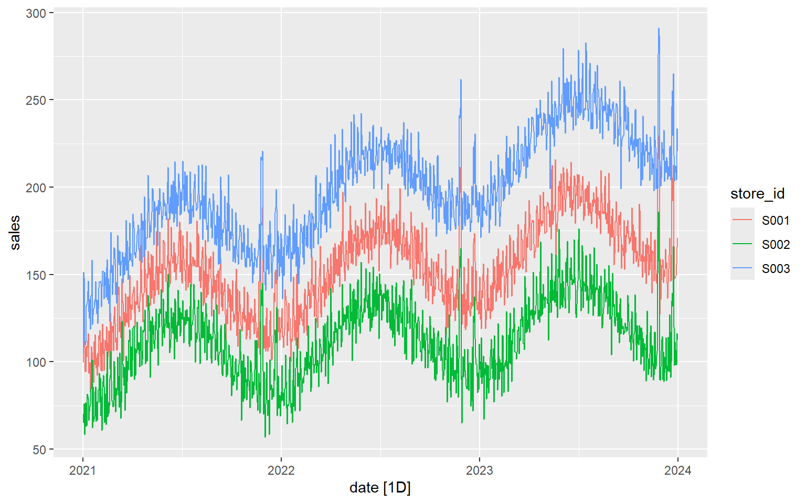
# Compare seasonal cycles year over year (daily data has 2 plausible cycles —
# weekly and yearly — so `period` must be stated explicitly)
sales_tsbl_filled %>% gg_season(sales, period = "year", labels = "both")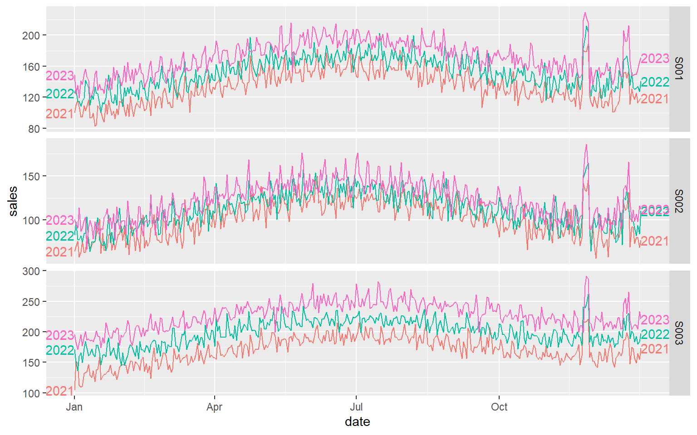
sales_tsbl_filled %>% gg_season(sales, period = "week")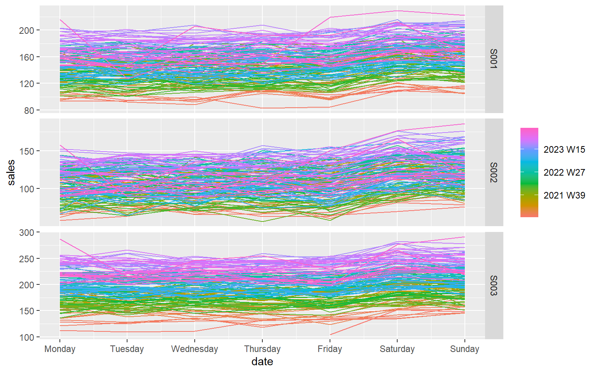
# Compare each calendar month's behaviour across years (the monthly aggregate
# is cleaner here than daily, since it removes the weekly cycle from view)
sales_monthly %>% gg_subseries(sales)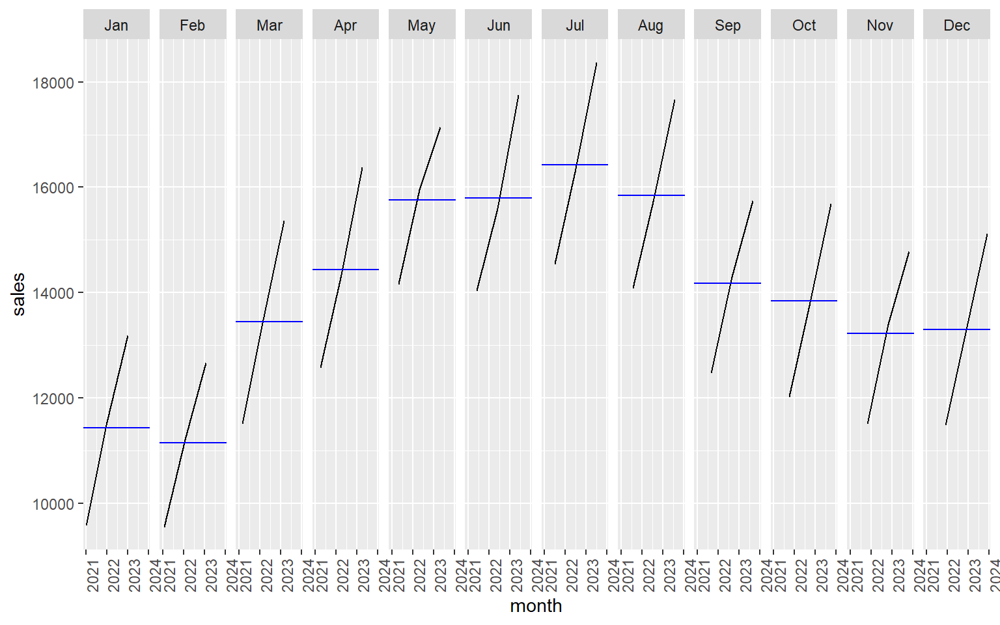
# Autocorrelation structure
sales_tsbl_filled %>% ACF(sales) %>% autoplot()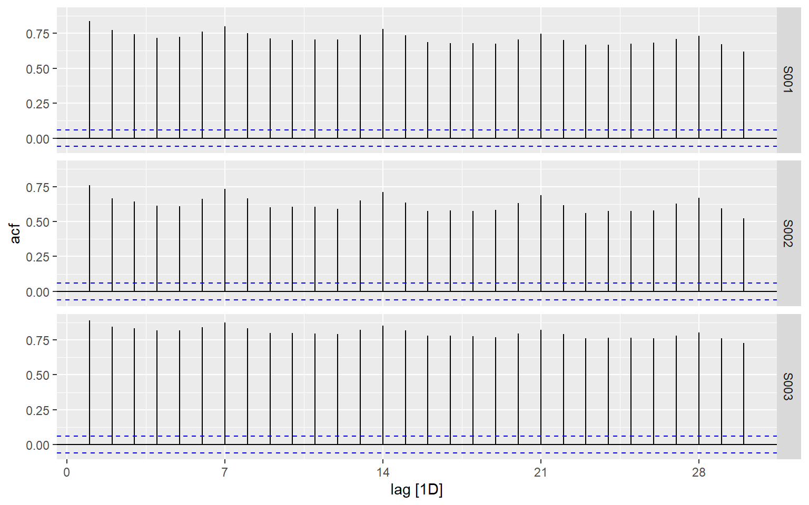
# STL decomposition (needs an explicit period on daily data too)
sales_tsbl_filled %>%
model(STL(sales ~ trend() + season(period = "year"))) %>%
components() %>%
autoplot()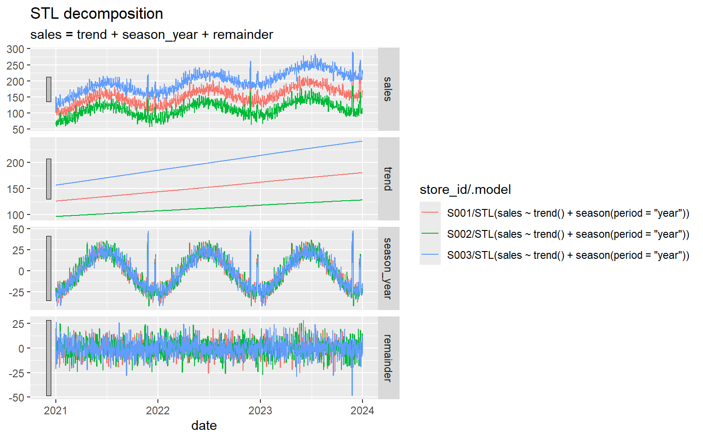
sales_tsbl_filled %>%
features(sales, feat_stl)| store_id | trend_strength | seasonal_strength_week | seasonal_peak_week | seasonal_trough_week | spikiness | linearity | curvature | stl_e_acf1 | stl_e_acf10 |
|---|---|---|---|---|---|---|---|---|---|
| S001 | 0.9035634 | 0.4918651 | 2 | 5 | 0.0109498 | 519.5315 | -53.03447 | -0.0127589 | 0.1460753 |
| S002 | 0.8546149 | 0.4969580 | 3 | 5 | 0.0114703 | 299.4689 | -60.93188 | -0.0453013 | 0.1312624 |
| S003 | 0.9420862 | 0.5282578 | 2 | 1 | 0.0113838 | 814.6827 | -64.40090 | -0.0476133 | 0.1203735 |
library(timetk)
library(readr)
# Read data — timetk works with a normal tibble; only a Date column is required
sales_tbl <- read_csv(
here("data", "sales_data.csv"),
col_types = cols(
date = col_date(format = "%Y-%m-%d"),
store_id = col_character(),
sales = col_double()
)
)
# Interactive/static time series plot, grouped by store (no tsibble conversion needed)
sales_tbl %>%
group_by(store_id) %>%
plot_time_series(date, sales, .interactive = FALSE)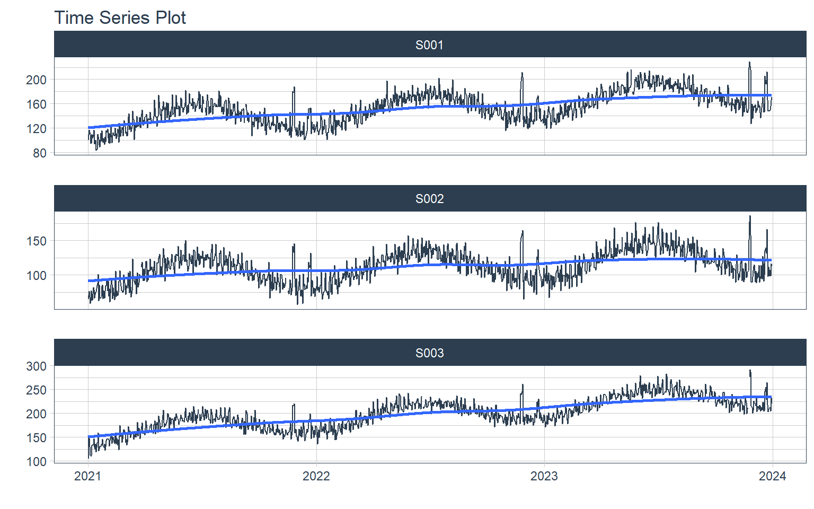
# Diagnose the time index: regularity, gaps, scale, timezone
sales_tbl %>% tk_summary_diagnostics(date)| n.obs | start | end | units | scale | tzone | diff.minimum | diff.q1 | diff.median | diff.mean | diff.q3 | diff.maximum |
|---|---|---|---|---|---|---|---|---|---|---|---|
| 3285 | 2021-01-01 | 2023-12-31 | secs | second | UTC | 0 | 0 | 0 | 28782.46 | 86400 | 86400 |
# Seasonal decomposition / ACF diagnostics in one call
# Explicit .feature_set: daily data has no sub-day granularity, so
# "second"/"minute"/"hour" are meaningless here and are excluded.
sales_tbl %>%
plot_seasonal_diagnostics(
date, sales,
.feature_set = c("wday.lbl", "week", "month.lbl", "quarter", "year"),
.interactive = FALSE
)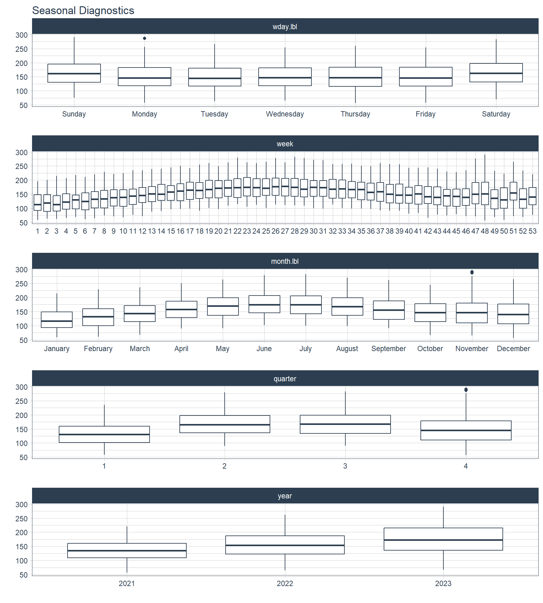
sales_tbl %>%
plot_acf_diagnostics(date, sales, .interactive = FALSE)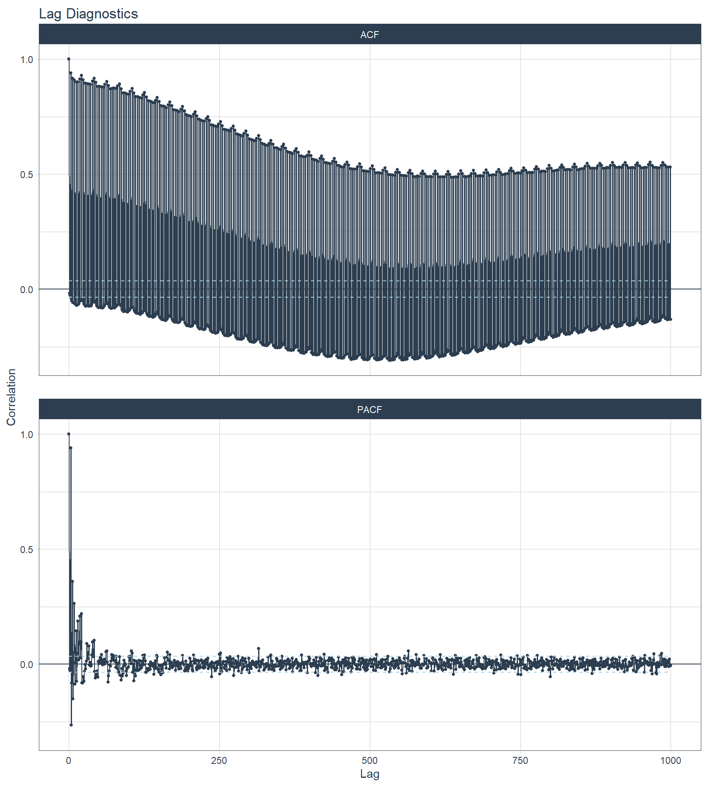
In this section we run each of trhe example codes and explain what mistake was made in each.
x <- 1:24
summ <- function(obj) {
paste0("start=", paste(start(obj), collapse = "-"),
" end=", paste(end(obj), collapse = "-"),
" freq=", frequency(obj))
}
run_call <- function(label, expr) {
res <- tryCatch({
obj <- expr
if (is.ts(obj)) summ(obj) else paste("returned", class(obj)[1])
},
error = function(e) paste("ERROR:", conditionMessage(e)),
warning = function(w) paste("WARNING:", conditionMessage(w)))
cat(label, ":", res, "\n")
}
run_call("Q1", ts(x, start = c(2023, 13), frequency = 12))Q1 : start=2024-1 end=2025-12 freq=12 run_call("Q2", ts(x, start = 2023, frequency = 12))Q2 : start=2023-1 end=2024-12 freq=12 run_call("Q3", ts(x, start = c(2023, 0), frequency = 12))Q3 : start=2022-12 end=2024-11 freq=12 run_call("Q4", ts(x, start = c(2023, 2), frequency = 4))Q4 : start=2023-2 end=2029-1 freq=4 run_call("Q5", ts(x, start = c(2023, 1), frequency = 12.5))Q5 : start=2023 end=2024.84 freq=12.5 run_call("Q6", ts(x, start = c(2023, 1), frequency = 12, deltat = 1/12))Q6 : start=2023-1 end=2024-12 freq=12 run_call("Q7", ts(x, start = c(2023, 1), frequency = 365))Q7 : start=2023-1 end=2023-24 freq=365 x_ts <- ts(x, start = c(2023, 1), frequency = 12)
run_call("Q8a", window(x_ts, start = c(2023, 13)))Q8a : start=2024-1 end=2024-12 freq=12 run_call("Q8b", window(x_ts, start = c(2030, 1)))Q8b : ERROR: 'start' cannot be after 'end' run_call("Q9", decompose(ts(x, frequency = 1)))Q9 : ERROR: time series has no or less than 2 periods Q1: Period 13 doesn’t exist, so R counts it as period 1 of the next year. The data shifts a year without a warning.
Q2: R reads a plain 2023 as the time 2023.0, which is January, so it works. c(2023, 1) is clearer because it names the period too.
Q3: Period 0 doesn’t exist, so R counts it as one period before January. The series starts in December 2022 instead of January 2023.
Q4: Frequency 4 means quarterly data, so 24 values cover six years, not two. c(2023, 2) is now the second quarter of 2023, not the second month.
Q5: R accepts 12.5 without an error, but a month can’t be half a period. The date labels break: the start shows only 2023, and the end shows 2024.84.
Q6: The two arguments agree, since 1/12 is the same as 12 periods per year, so R accepts the call. It should only fail when the two values disagree.
Q7: A frequency of 365 means daily data, so 24 values only cover 24 days. The end label reads 2023-24, which looks like a date but is really day 24 of the year.
Q8a: January 2024 is inside the series, so window() returns the data from that point on.
Q8b: The start, 2030, is after the end of the series, so window() stops with the error ‘start’ cannot be after ‘end’.
Q9: A frequency of 1 means there’s no seasonal cycle to extract. decompose() needs at least two full cycles, so it throws the error time series has no or less than 2 periods.
This first lecture and practice material was really interesting, but very hard to wrap my head around. There are so many functions and so many ways to format and view the data, with many different options for packages. It was very overwhelming and frustrating to figure out the differences and understand what goes where.
The theory from the slides was a lot of info to process too, and I’m not sure where it is going yet. We’ve already been introduced to forecasting and I’m still uncertain as to what we are forecasting from. I do not yet see or understand the models we will be dealing with, which I feel like would have helped understand why we do what we did in this section.
The main take aways I have gotten from this is first, how different time series data is to “regular” data. The number of new packages and functions we’ve been introduced to is really exciting. The second thing is how powerful some existing packages are for data visualisation. Some of these plots will be so helpful in future EDA for any projects I may do in any course, even when not using time series data.
I am very excited for the rest of this course and to get stuck into the modelling soon.